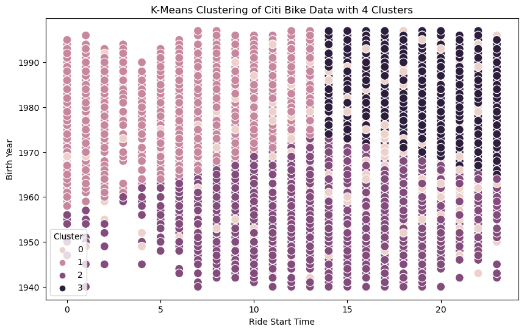
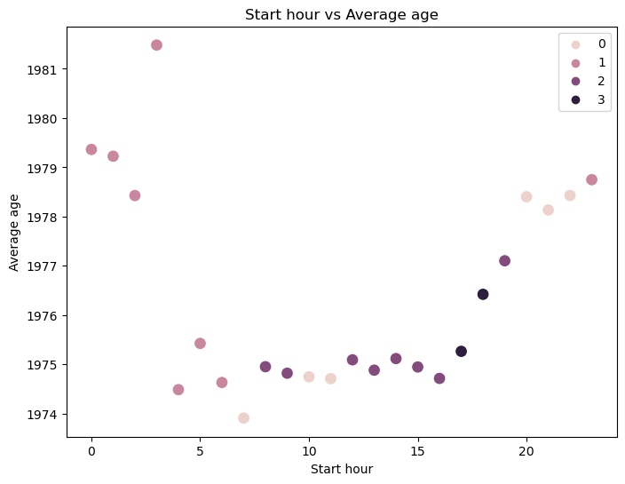

New York Citi Bike: Advanced Analysis
PROJECT OVERVIEW
Company
Citi Bike is a New York City bike share system. It is the nation's largest bike share program with 25.000 bikes and more than 1.500 stations in Manhattan, Brooklyn, Queens, the Bronx, Jersey City, and Hoboken.
Analysis Questions
Objective
This analysis is intended to explore Cite Bike user behavior through advanced analysis. Focuses on correlation/regression analysis, clustering, geographic analysis, and statistical models in machine learning analysis.
Context
This project was created with the aim of diving deeper into the use of Python tool and its libraries as a part of CareerFoundry's Data Immersion Program and to learn how to address the defined questions/hypotheses using advanced analytical techniques.TOOLS AND SKILLS
TOOLS
- Python
- Pandas
- NumPy
- Seaborn
- Anaconda
- Matplotlib
- Jupyter Notebook
SKILLS
- Scikit-Learn
- Statistical Modelling
- Time-series Analysis
- Supervised Machine Learning: Regression
- Unsupervised Machine Learning: Clustering
PROCESS
Data
Original data sets used throughout the project:
- Title: Citi Bike Data
- Description: The dataset includes 330 bike stations in New York as of September 2013 with an original size of 50,000 rows and 18 columns
- Source: Kaggle
Step 1: Exploratory Data Analysis (EDA)
After sourcing data from Kaggle, I started my first step by doing EDA. From this step I got to know my data further by checking the variables, data types, etc. Here I also tried to derive my data to help me gain more insights that may not be readily apparent in my original data.

Some EDA process documentation: Sourcing Open Data and First Analysis.
Step 2: Exploring Relationship
Here I started digging deeper into my data. I used an aggregation function and started creating a heatmap to get some insights.

Step 3: Analysis
Here I conducted more analysis to discover hidden and interesting patterns.
 Younger people have shorter average trip durations and tend to start their trips later in the night, while older people have a higher average trip duration.
The busiest station to start:
Forecast shows that this will repeat the pattern that at weekends the number of trips will decrease
RESULTS
Sample results:Full results:
RECOMMENDATIONS
We can take advantage of weekend opportunities to increase income because the average trip duration tends to be higher on weekends. For example, by providing discount promos or giving more points if users ride on weekends.